Diffusion Models
Andrew Goldberg
DeepFloyd Generations
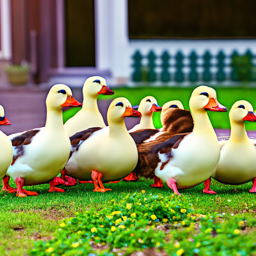
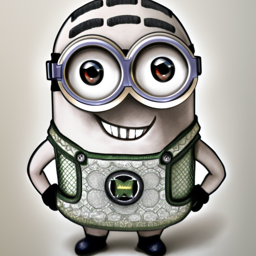
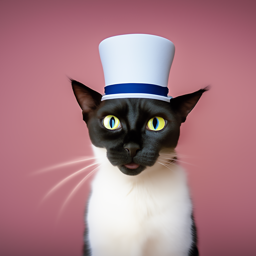
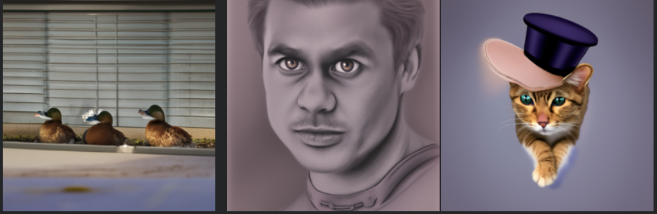
These are images generated by the DeepFloyd IF model. I used a random seed of 100 for my experiments. The first row uses 20 inference steps while the second row uses 5 steps for stage 1, but maintains 20 steps for stage 2. The generations with 5 steps are still quite good in terms of realism, but the minion does not look like a minion and the ducks have some artifcats arount their breaks.
Noising and Denoising

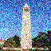
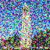
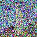
Images are noised by indexing into the provided cumulative alpha schedule and blending the raw image with random gaussian noise. As we increase our cumulative alpha we add a stronger weight to the noise in the image.
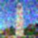
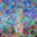
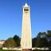
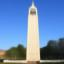
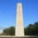
Comparison of denoising using gaussian blurring which leaves significant noise artifacts and unet denoising which removes the noise artifacts, but doesn't recover all detail.
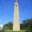
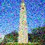
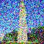
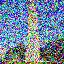
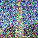
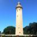
The top row shows using DeepFloyd IF to iteratively denoise the image from a noise level of 750. The bottom row shows a comparison between each denoising technique and the original image. Iterative denoising ends up having more high-frequency detail than one step denoising. I used torch.arange to create the list of timestamps and performed iterative denoising by calling the model with each timestamp in the list and taking a proportionally sized step subtracting the scaled predicted noise from the image.
Diffusion Model Sampling
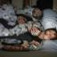
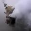
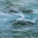
Images sampled from DeepFloyd with no guidance
Images sampled from DeepFloyd with classifier free guidance using "a high quality picture" as the prompt. To implement classifier free guidance, I used a setup similar to iterative denoising, but called the model twice once with and once without the prompt. Then, I combined the two noise predictions by taking the unconditional prediction and adding a scaled version of the difference between the conditional and unconditional predictions.
Image Editing
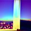
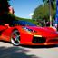
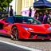
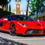
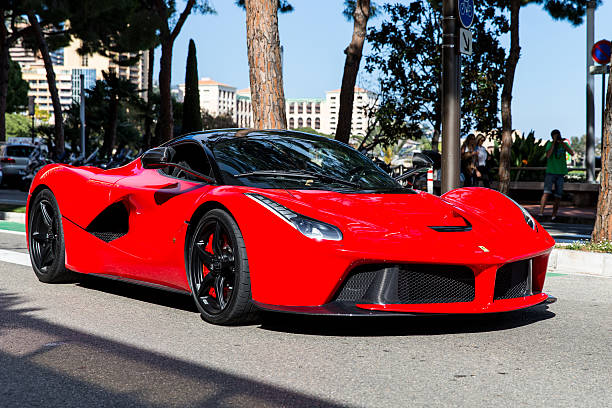
These images are noised then regenerated using classifier free guidance. By noising the images more or less we can control how much of the original image is preserved in the generated image.
Hand-drawn Image Editing
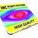
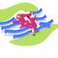
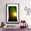
Inpainting
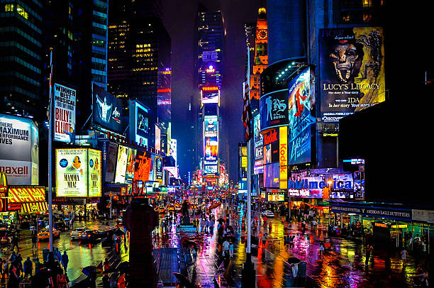
I kept a small part of each original image in a rectangular mask and then inpainted the rest of the image using the diffusion model while keeping the masked part of the image unchanged. The diffusion model is able to fit these masked sections somewhat naturally into the image. I thought the way these images use a screen or canvas to naturally blend the masked sections in was interesting.
Text-to-Image-to-Image
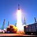
Prompt "A photo of a rocket launch" used with an image of the campanile.
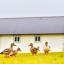
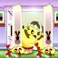
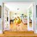
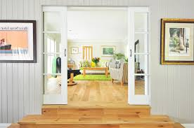
Prompt "a group of ducks who wandered into a house" used with an image of a house interior.
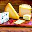
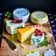
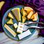
Prompt "A photo of a cheeseboard" used with an image of a tire.
Visual Anagrams
These images are meant to look like one prompt in one orientation and a different prompt when vertically flipped. During iterative denoising, I used one prompt embedding in one orientation then flipped the image and used the other prompt embedding. Then I combined the two noice predictions along with the unconditional prediction to get the final noise prediction at each iteration.
Hybrid Images
Tehse images are hybrid images meaninf that from up close they look like one thing but further away they look like another because the different images utilize different frequencies whcih appear different when viewed from different distances. I did this by using a low-pass filter on one noise prediction and a high-pass filter on the other noise prediction then combining them.
MNIST Diffusion Model
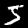
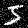
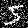
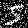
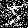
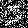
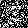
MNIST image with progressively more noise added
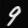
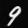
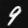
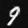
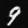
Out of distribution denoising at different noise levels. The denoising model was trained on MNIST images denoised at sigma = .5, but its' also to denoise images at other noise levels well until sigma = .8.
Denoising examples at sigma = .5
The images all look like the same blurred blob regardless of the initial noise distribution because the network is trained without conditioning. The network doesn't have a goal number in mind to generate so it ends up creating a mix of all the numbers causing it to generate a blurred blob in the center with some parts brighter as a result of being part of more numbers. Predicting an average like this helps to reduce the loss, but fails to represent the multi-modality of our distribution.